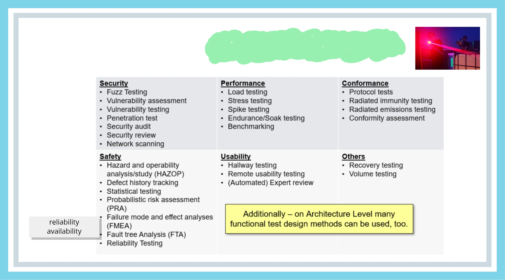
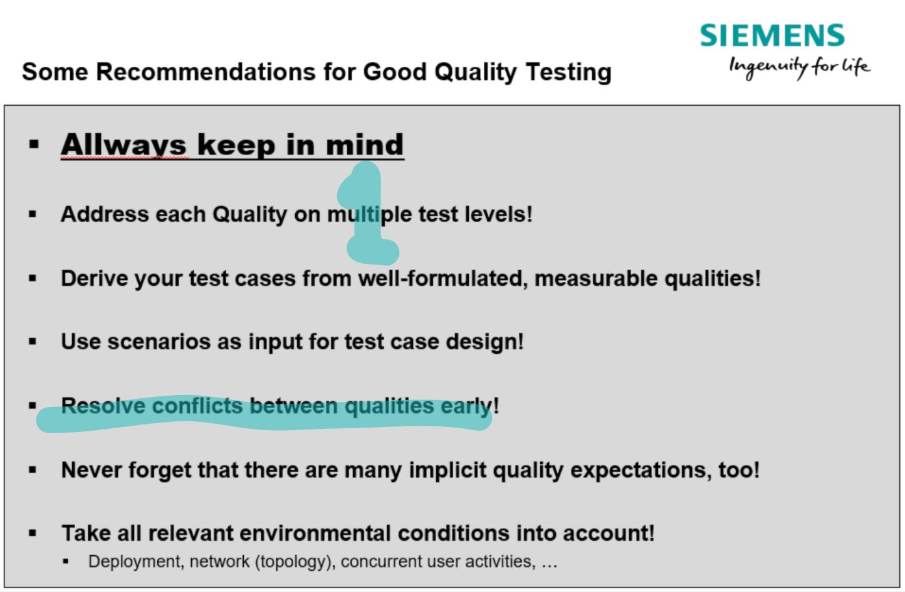
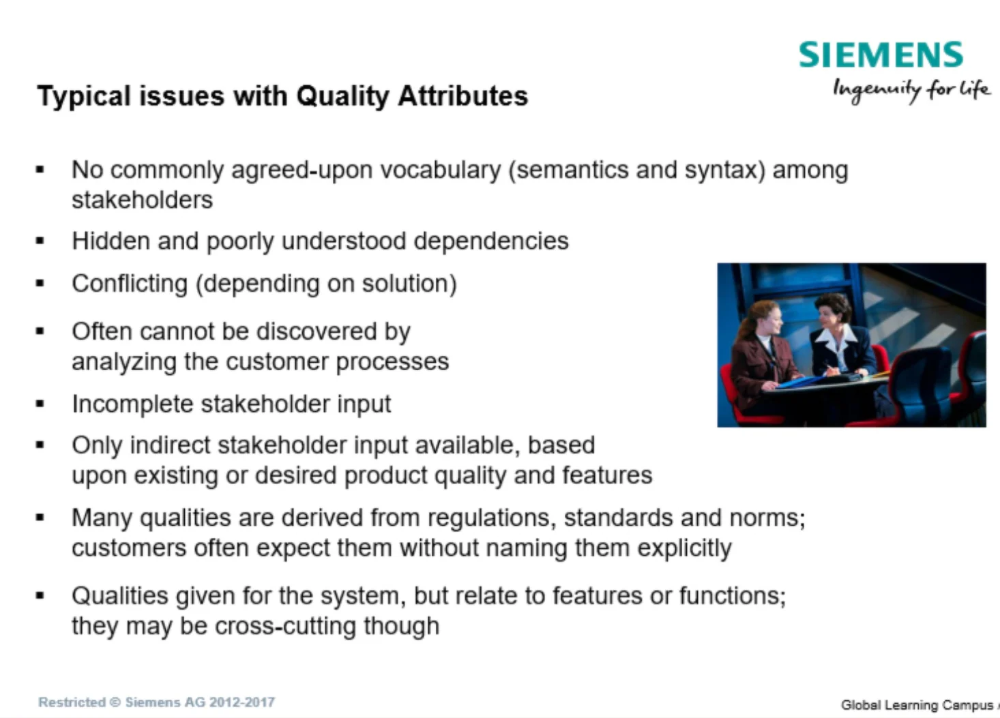
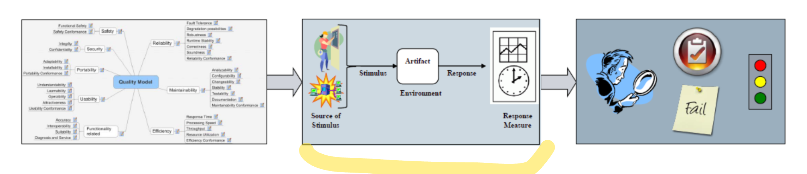
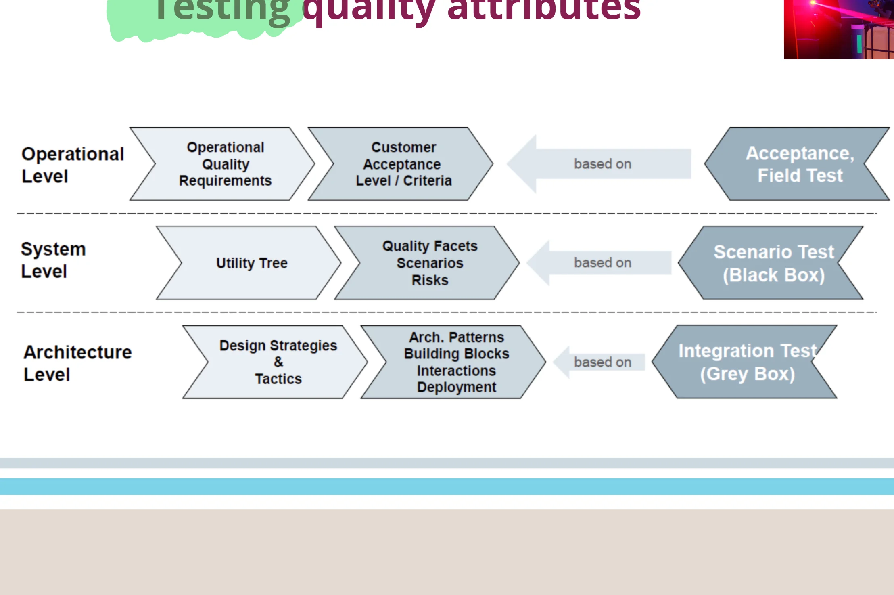
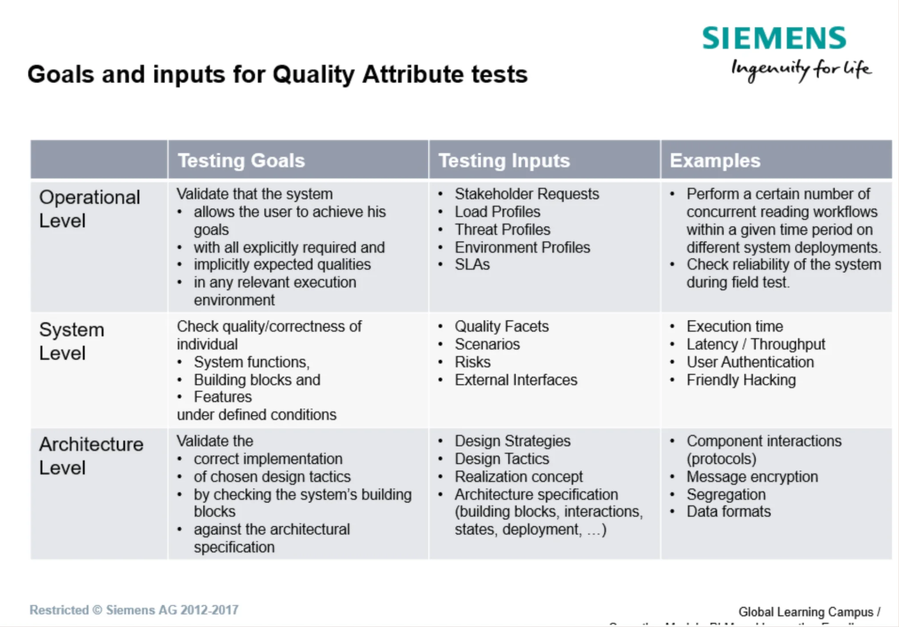

Testing Non-Functional Requirements (NFR Testing)
NFR Testing (Testing Non-Functional Requirements / Quality Attributes) is the process of verifying and validating how well a system performs its functions, as opposed to functional testing, which verifies what the system does. While functional properties express specific business or operational tasks, quality attributes – such as performance (Efficiency/Performance), reliability (Reliability), security and safety (Security/Safety), maintainability (Maintainability), and testability (Testability) – define the system's operational boundaries, structural integrity, and architecture.
From a software architecture perspective, quality attributes are key drivers of architectural decisions and design tactics. Quality cannot be "tested into" software after the fact; testing serves as a measurement and indication mechanism for architectural design. If non-functional requirements are neglected or incorrectly specified, this leads to catastrophic failures in production, architectural debt, or an inability to scale and maintain the system. The Test Architect and Software Architect must work closely together to define the utility tree (Utility Tree), establish precise metrics, and integrate NFR tests early throughout the entire life cycle.


#Definitions and Basic Concepts
The key concepts of NFR and quality attribute testing are presented below, with an emphasis on their architectural and testing significance as well as the examination context.
#1. Non-Functional Requirement / Quality Attribute (Non-Functional Requirement / Quality Attribute)
- Definition: A technical or operational requirement describing the properties and quality of the system's operation as a whole (for example, reliability, security and safety, response time), rather than a specific user function. The ISO/IEC 9126 and ISO/IEC 25010 standards formalize these attributes into clusters of subordinate characteristics.
- Significance in architecture: Directly determines the architectural style, choice of technologies, distribution of components, and application of design tactics.
- Significance in testing: Defines acceptance criteria for system and integration tests; requires a dedicated environment and specifications of load or security profiles.
- Typical mistake or misunderstanding: Mistaking NFR for "secondary" requirements and postponing them until the acceptance testing phase (late NFR testing).
- Examination discussion & Case example: The examination assesses the ability to transform a vague requirement (for example, a "fast system") into a measurable architectural scenario. Example from embedded/industrial software: For a brake electronic control unit (ECU), the NFR is defined as an interrupt processing response time of no more than 2 ms at 100% CAN bus load.
#2. ISO/IEC 9126 (or ISO/IEC 25010) Quality Model (Quality Model)
- Definition: A standardized framework categorizing software quality into main characteristics: Functionality (Functionality), Reliability (Reliability), Usability (Usability), Efficiency/Performance (Efficiency), Maintainability (Maintainability), and Portability (Portability).
- Significance in architecture: Provides a complete taxonomy for managing architectural compromises (trade-offs) and structuring architectural documentation.
- Significance in testing: Serves as a systematic checklist for the coverage of test strategies and requirements reviews (Requirements Reviews), ensuring that no dimension of quality is overlooked.
- Typical mistake or misunderstanding: Restricting testing to functionality and ignoring structural attributes such as Maintainability or Testability.
- Examination discussion & Case example: Questions often focus on subcharacteristics. Example: Distinguishing between Fault Tolerance (the ability to maintain operation in the presence of a fault) and Recoverability (the ability to recover after a failure) in a train control safety system.
#3. Quality Attribute Scenario and Utility Tree (Quality Attribute Scenario & Utility Tree)
- Definition: A construct used to describe NFR precisely using 6 parts (Source of Stimulus, Stimulus, Environment, Artifact, Response, Response Measure); the utility tree (Utility Tree) then prioritizes these scenarios according to business value and architectural risk.
- Significance in architecture: Enables the architect to quantify objectives and select appropriate patterns or tactics.
- Significance in testing: A direct basis for creating acceptance test cases and test oracles (Test Oracles) for NFR.
- Typical mistake or misunderstanding: Specifying NFR without a response measure (Response Measure), which makes objective test evaluation (Pass/Fail) impossible.
- Examination discussion & Case example: Example: When the primary power supply fails (Stimulus) in an industrial control cabinet (Environment), the backup microcontroller must take over control within 50 ms and save the state to NVM (Response Measure).
#4. Testability and Internal Software Quality (Design for Testability & Internal Quality)
- Definition: Testability is the ability of a software product to allow easy and effective verification and validation. Internal quality represents structural cleanliness at the levels of architecture, macro-structure, and micro-structure.
- Significance in architecture: Requires the application of tactics such as observability (Observability), controllability (Controllability), decomposition, and minimization of cyclomatic complexity.
- Significance in testing: Fundamentally determines automation costs, test stability, and the ability to perform isolated unit and integration tests without dependence on physical hardware.
- Typical mistake or misunderstanding: Viewing testability as a matter for testers rather than as a fundamental architectural requirement for code and components.
- Examination discussion & Case example: Discussion of interfaces. Example: A complete absence of diagnostic APIs or interfaces for fault injection (Fault Injection) in a safety-critical module makes it impossible to achieve 100% MC/DC coverage.
#5. Reliability Testing and Fault Injection (Reliability & Fault Injection Testing)
- Definition: Reliability testing verifies the system's ability to maintain a specified level of performance under stated conditions for a specified period. Fault injection (Fault Injection) is a technique for deliberately introducing faults (hardware transients, faulty memory, communication outages) to verify safety mechanisms.
- Significance in architecture: Verifies fault detection and recovery tactics (for example, Watchdog, BIST – Built-In Self-Test, error states, degraded mode).
- Significance in testing: Requires automated long-duration tests (Soak/Endurance testing) and specific test setups for simulating component failures.
- Typical mistake or misunderstanding: Assuming that the absence of error messages during normal operation proves reliability in critical/degraded states.
- Examination discussion & Case example: Example from automotive software (ISO 26262): Testing the software's response to a sensor power supply failure by injecting an error code at the interface and monitoring the transition to a safe state (Safe State).
#FURPS Model
The FURPS model is a classification framework for software requirements and quality attributes that serves as a comprehensive outline for designing functional and non-functional tests.
- F – Functionality (Functionality): System capabilities, scope of functions, accuracy of calculations, and security. It determines whether the application does exactly what the user and the specification require of it (functional testing).
- U – Usability (Usability): Ergonomics, aesthetics, user interface friendliness (UI/UX), and clarity of documentation. Ease of use and prevention of user errors are tested.
- R – Reliability (Reliability): Frequency and severity of failures, ability to recover after an error (recoverability), availability, and predictability of the system in abnormal states.
- P – Performance (Performance): Response speed, throughput, scalability, and consumption of hardware resources (RAM, CPU). Includes load and stress tests.
- S – Supportability (Maintainability / Support): Testability (testability), ease of locating and correcting defects, configurability, installability, and code extensibility.
The extended version FURPS+ is also often used, where the "+" symbol includes additional constraints – primarily design requirements (design constraints), implementation standards, interfaces to third parties, and physical limits of the environment. In practice, the model acts as an effective checklist to ensure that tests do not focus solely on functionality but cover all dimensions of quality.
#Testing quality
#Issues

#Process

#Attributes

#Goals and Inputs

#Typical Problems with Quality Attributes (Quality Attributes)
Inconsistent terminology among stakeholders:
- There is no jointly agreed vocabulary (semantics and syntax) for describing non-functional requirements and quality attributes.
Hidden and poorly understood dependencies:
- Interrelationships and dependencies between individual attributes are often unclear or overlooked.
Conflicting requirements:
- Quality attributes may conflict with one another depending on the selected technical or architectural solution (for example, high security vs. performance and response time).
Difficulty identifying them from processes:
- These attributes often cannot be readily identified merely by analyzing customer processes and workflows.
Incomplete input from stakeholders:
- Stakeholders rarely provide a complete and coherent specification concerning system quality.
Only indirect specification:
- Often, only indirect information and input are available, based on the existing or subjectively desired level of product properties.
Implicit expectations and normative requirements:
- Many quality attributes derive from regulatory provisions, standards, and norms. Customers and users often take them for granted and do not state them explicitly in the specification at all.
Mismatch in the level of abstraction (system vs. function) and cross-cutting nature:
- Qualities are often defined generally for the entire system, although they actually relate to specific functions/elements – and, conversely, they may have a cross-cutting nature (cross-cutting concerns) that affects the entire architecture.
#Common Mistakes and Anti-Patterns
Typical mistakes occur in the areas of NFR and quality attribute testing that negatively affect the architecture, the project process, and the resulting quality.
| Area | Anti-pattern / Mistake | Why is it a problem? | How does the mistake manifest itself? | How can it be prevented? |
|---|---|---|---|---|
| Architecture | Absence of observability and testing interfaces (Untestable Architecture) | The code is tightly coupled (tight coupling), with no interfaces for monitoring internal state and injecting faults. | Inability to write fast unit/integration tests; everything must be tested through the UI or final hardware, with a high incidence of production defects. | Applying the Design for Testability tactic from day one; interface separation, use of Dependency Injection, and diagnostic interfaces. |
| Requirements | Vague and unmeasurable NFR (Vague Quality Requirements) | Requirements such as "the system must be highly available" or "fast" provide no acceptance criteria. | Developers and testers interpret requirements differently; NFR tests cannot be evaluated objectively (Pass/Fail). | Formatting NFR using quality attribute scenarios (Quality Attribute Scenarios) with a precisely defined response metric. |
| Test strategy | Postponing NFR until the end (Late NFR / Big Bang Testing) | NFR tests are not performed until the acceptance phase on the final system because environments are missing. | Architectural defects (for example, memory leaks, thread deadlocks) are discovered just before release, when they are most expensive to fix. | Applying the Shift-Left approach; continuously testing NFR at the component and integration levels using simulators. |
| Automation | Blindly rerunning failed tests (Auto-Retry Anti-pattern) | When a test fails, the tool runs it again (2–3×) and marks it as passed if one attempt succeeds. | Masks actual architectural defects (race conditions, memory leaks, resource inconsistencies) and creates unstable tests. | Eliminating "flaky" tests through root-cause analysis; correcting timing, memory management, and synchronization in the code or test. |
| Testability | Measuring inappropriate internal metrics (Irrelevant Metrics Focus) | The team invests effort in measuring CPU/memory lookups without knowing their connection to business objectives or user experience. | Time is wasted on optimizations that deliver no value to the customer, while actual response time remains poor. | Linking NFR metrics to business objectives (Business Value) and defining test oracles based on user scenarios. |
| Communication | Silos between architecture and testing (Architect-Tester Silo) | The architect designs tactics (for example, failover, caching) without informing the testing team about them. | The test strategy does not cover the designed architectural tactics and tests only the functional happy-path. | Close collaboration between the Architect and the Test Manager/Architect when creating acceptance criteria and planning test levels. |
#Examination Questions
The following types of questions can be expected in an oral examination or certification interview (for example, ISTQB Advanced Technical Test Analyst / Software Architect).
#1. Basic Questions
- Question: What is the fundamental difference between functional testing and quality attribute testing (NFR)?
- What a good answer should include: A clear distinction: Functional testing verifies what the system does (behavior against the specification). NFR testing verifies how well it does it (performance, reliability, security and safety, maintainability). A good answer mentions the ISO 9126 / ISO 25010 standard.
- Question: How do you define testability (Testability), and what are its main components from a software architecture perspective?
- What a good answer should include: A definition of testability as the degree of ease with which software can be verified. From an architectural perspective, it includes observability (observability), controllability (controllability), separation of dependencies, and modifiability.
#2. Intermediate Questions
- Question: Explain the difference between load testing (Load Testing), stress testing (Stress Testing), and endurance testing (Soak/Endurance Testing).
- What a good answer should include: Load testing verifies behavior under expected load. Stress testing exercises the system beyond its specified limits or under resource scarcity (for example, a combination of high TPS and low memory). Soak testing verifies long-term operation for memory leaks or resource degradation over time.
- Question: How do "Quality Attribute Scenarios" help specify non-functional requirements?
- What a good answer should include: A description of the 6 structural elements of a scenario (Source, Stimulus, Environment, Artifact, Response, Response Measure). Emphasis that without a response measure (Response Measure), an unambiguous test oracle cannot be created.
#3. Advanced Questions
- Question: The "Fault Injection" technique is used in safety-critical systems (Safety-Critical / ISO 26262). At what test level is it applied, and what defects does it reveal?
- What a good answer should include: It is applied at the integration and validation testing levels. The objective is to verify safety mechanisms (Safety Mechanisms), fault recovery (Fault Recovery), handling of degraded modes, and transient hardware states (for example, power outages, incorrect signals).
#4. Questions about Practical Experience
- Question: In a project, you have encountered a situation where NFR tests pass in the test environment, but reliability and performance failures occur in production. What are the causes, and how would you resolve the problem?
- What a good answer should include: Identification of differences between environments (configuration, network latency, data volume, background load). Solution: Ensuring a production-like environment for NFR, using operational profiles (Operational Profiles), and implementing monitoring of production behavior.
#5. Questions about Trade-Off Decisions
- Question: How do you address the architectural trade-off between high Performance (speed) and Security (encryption and authorization)? How should this trade-off be tested?
- What a good answer should include: An explanation that strong encryption and complex access checks increase latency and CPU consumption. The architect must establish prioritization in the Utility Tree. The test architect designs test scenarios to measure the impact of security features on performance boundaries (Efficiency vs Security compliance).
#Model Examination Answer
Quality attribute testing (NFR Testing) and its direct connection to software architecture and the testing process.
To begin, it is necessary to emphasize the fundamental principle: Software quality cannot be tested into a system after the fact. NFR testing does not function as a corrective tool, but as a verification mechanism for architectural decisions. While functional tests answer the question of whether the system performs the specified tasks, NFR tests verify structural properties – namely performance, reliability, security and safety, maintainability, and testability. These properties are based on standards such as ISO 9126 or ISO 25010.
From an architectural perspective, quality attributes are essential because they directly determine design tactics and patterns. If we do not subject the architecture to a precise assessment of non-functional requirements, we risk incurring massive architectural debt and system failure. The architect's key tools are the utility tree (Utility Tree) and quality attribute scenarios, which transform vague ideas into precisely measurable responses.
From a testing perspective, NFR present a challenge primarily in terms of the test basis and environment. NFR tests – such as load tests, reliability tests, or recovery tests – require production-like environments and precise test oracles. If testers do not have measurable boundaries available, exit criteria (Exit Criteria) cannot be established objectively.
Let us consider a practical example from the embedded domain. For an automotive electronic control unit (according to ISO 26262), the non-functional requirement concerns reliability and functional safety. The architect designs fault tolerance tactics – for example, backup bus communication and a watchdog. The test architect designs integration tests using Fault Injection, in which we deliberately simulate a sensor failure or RAM corruption. The test then verifies whether the software brings the system into a safe state (Safe State) within 10 milliseconds.
However, every architectural design addressing NFR encounters trade-offs (compromises). We cannot have maximum performance, absolute security and safety, and the highest modifiability simultaneously at an acceptable cost. For example, introducing strong encryption increases CPU demands and raises latency. The architect, together with the business owner, must define prioritization, and the tests must verify whether the selected compromise lies within an acceptable range.
In conclusion: NFR testing is not a one-off activity at the end of a project. It requires a Shift-Left approach, in which the test architect helps create a testable architecture from the beginning of the project, performs static requirements reviews, and continuously verifies quality attributes at all levels of the test pyramid. Thank you for your attention."
#Short Version for Quick Revision (Cheat Sheet)
#5 Main Points
- Quality cannot be tested in after the fact – NFR tests verify architectural design tactics.
- Precision of specification – NFR must be defined using scenarios with a quantitative response measure.
- Shift-Left NFR testing – Reliability and performance testing must begin at the component and integration levels, not only at the end.
- Production-like environments – Performance and security tests outside a production-representative environment provide distorted results.
- Trade-offs are inevitable – Every quality attribute requires a compromise with another (for example, Security vs Performance).
#5 Key Concepts
- ISO 9126 / ISO 25010 – Standardized software quality models.
- Quality Attribute Scenario – A six-element format for the precise description of NFR.
- Design for Testability – Architectural design that facilitates testing (observability, controllability).
- Fault Injection – A technique for deliberately introducing faults to verify reliability and safety.
- Operational Profile – A quantitative description of how a system is actually used, for reliability and load testing.
#5 Typical Examination Questions
- What is the difference between functional testing and NFR testing?
- What constitutes a quality attribute scenario, and why is a response measure necessary?
- How does architecture affect system testability?
- What is the principle and significance of the Fault Injection method in safety-critical applications?
- What are the risks of postponing NFR tests until the acceptance testing phase?
#3 Most Common Mistakes
- Vague requirements without metrics (for example, "high speed").
- Ignoring the NFR environment (testing on unrepresentative hardware).
- Auto-Retry for flaky tests (hiding architectural timing/memory defects).
#1 Concise Model Sentence for the Oral Examination
"NFR testing does not teach code new functions, but verifies whether the system's architectural tactics can sustainably and safely guarantee the required operational limits under load and in error states."
#Learning outcome
The answer directly reflects the requirements stated in Learning and practice outcomes (LOPO):
- Test Pyramid and Test Trophy for NFR: Distributing NFR testing activities across levels (Unit, Integration, System) so that the architecture is verified as early as possible.
- Design for Testability: Implementing the "testability" property at multiple levels of architecture to increase test efficiency and reduce automation costs.
- Internal Quality and Technical Debt: Monitoring internal software quality at the architecture, macro, and micro levels to prevent code degradation and manage technical debt.
- Architecture Validation: Ensuring the design and execution of tests intended to validate the architecture (especially integration and NFR tests).
#Summary in a Single Table
| Area | What is important | Relationship to architecture | Relationship to testing | Typical examination question |
|---|---|---|---|---|
| Performance (Efficiency / Performance) | Response time (Response time), throughput (Throughput), resource utilization (CPU, RAM, CAN bus). | Requires tactics for resource management (caching, load balancing, asynchronous processing). | Requires load-testing environments, traffic generators, and the definition of operational profiles. | What is the difference between Load, Stress, and Soak testing, and what defects do they reveal? |
| Reliability and Safety (Reliability & Safety) | Fault tolerance (Fault tolerance), recoverability (Recoverability), Fail-Safe behavior. | Design of BIST, redundancy, watchdogs, and fault recovery mechanisms. | Performing Fault Injection tests, simulating hardware outages, and verifying transitions to degraded states. | How can safety mechanisms be verified in a system complying with ISO 26262? |
| Testability (Testability) | Observability of internal state, controllability of inputs, component isolation. | A consequence of modular decomposition, the use of interfaces, DI, and diagnostic stubs/mocks. | Direct influence on the effort required to write automated tests and eliminate unreliable (flaky) tests. | Which architectural properties increase software testability? |
| Maintainability (Maintainability) | Analyzability, modifiability, modularity, and low complexity. | Managing cyclomatic complexity, adhering to layering and design patterns (anti-spaghetti code). | Verification through static code analysis (McCabe, SonarQube) and architecture reviews (checklists). | How does internal software quality relate to technical debt, and how can it be tested? |
| Data Security (Security) | Confidentiality (Confidentiality), integrity, authentication, authorization, auditability. | Security architecture (Encryption, RBAC, secure communication protocols). | Includes vulnerability scanning, penetration tests, and investigation of fault conditions (Fault attacks). | How can technical security attributes be tested, and how can their impact on performance be addressed? |